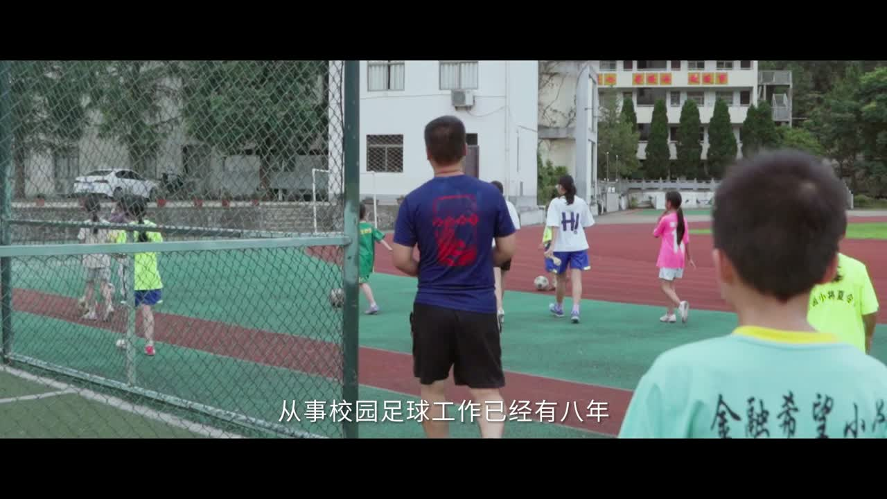
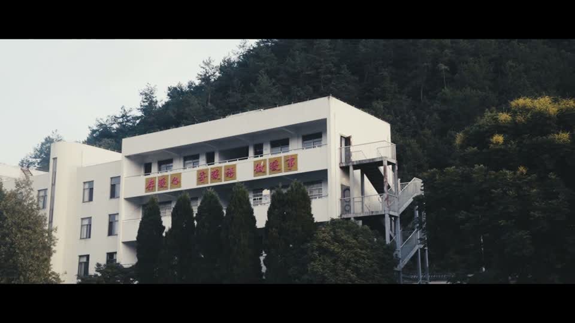
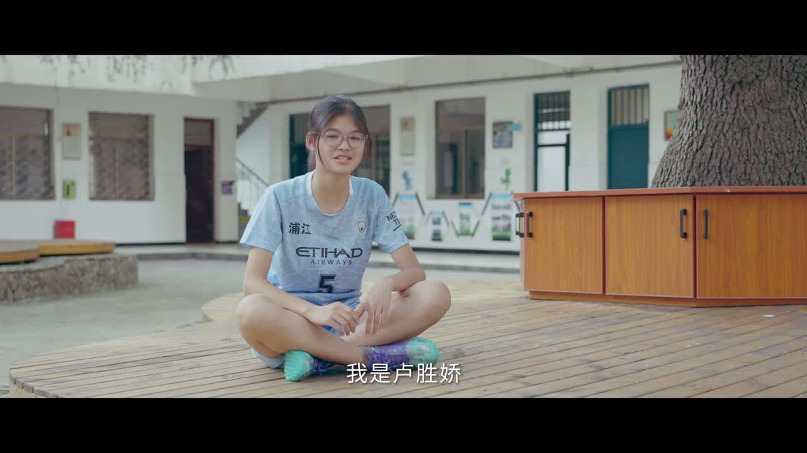
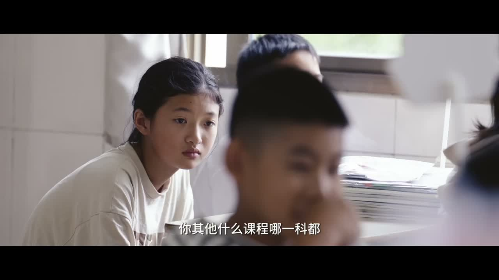

01 3′20″Ensemble Trailer
群像预告 · 球队与学校
教练、场地、整支球队。先把世界交代清楚，再让人物走进来。
浙江浦江，大山深处的一所希望小学。足球是孩子们去往城市的一道「窄门」，也是他们少数可以自己决定的事。
影片跟随几个孩子和她们的家庭，记录一个夏天里的训练、比赛与告别。球场上是奔跑和喊叫，屋子里是沉默和账本——两种生活被同一个下午切开。
入围第 32 届北京国际电影节 · 大学生电影节原创单元，被广州市图书馆馆藏。

01 3′20″教练、场地、整支球队。先把世界交代清楚，再让人物走进来。

02 2′56″从她开始。一个女孩、一间屋子、一条通往球场的水泥路。

03 40″四十秒认识一个人：「足球对我来说意味着自由。」

04 2′56″夏天结束，球场安静下来。留下的人继续上学，走的人带走一双球鞋。
「教育欠发达的大山深处，足球是去往城市的一道窄门。」 —— 影片旁白